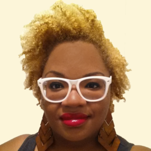

About This Site
This site created to get people more aware of descrimination in this world.
That discrimination is still used to harm people. Discrimination (website name) is
designed to be a safe site for people who have experinced discrimination becuase of
the race, skin color, gender, sexuality etc. to know that they are not alone.On this
site they are able to find other stories of microaggresion and discrimination.

Why We Care.
The reason why Girls Who Code cares about discrimination is because, we are trying
to have more women invovled in the tech industry. By not letting your gender get in the way
of deciding your career in life. This upcoming generation will have the power of deciding what
is the new norm of society. Will people still be oppressed by their race, gender, sexuality or,
will everybody

Janisha Gabriel
Our website was inspired by Janisha R. Gabriel, a founder of Haki Creatives and
board member of The BLK Projek. Janisha was born Oct. 15, in the Bronx. Janisha Gabriel
holds a Master of Arts from Alliance Theological Seminary and a Bachelor's from Howard
University. We based this project off of her because a lot of her work is based on the
experiences of people of color and LGBTQ people.